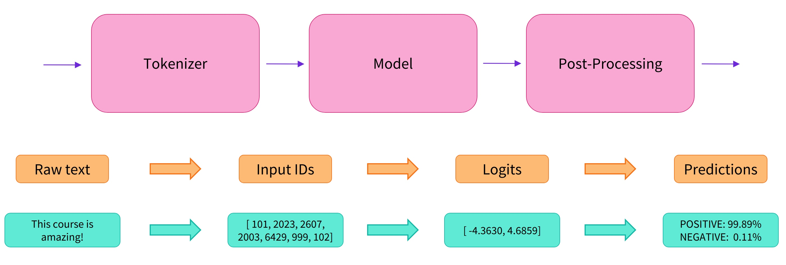

Transformers 是 huggingface 推出的 NLP python 库。兼容 pytorch, tensorflow 等框架，提供了数以千计的预训练模型，支持 100 多种语言的文本分类、信息抽取、问答、摘要、翻译、文本生成。它的宗旨是让最先进的 NLP 技术人人易用，从下面的例子可以看出确实简洁易用。
使用样例
from transformers import pipeline
# 情感分析
classifier = pipeline('sentiment-analysis')
classifier('We love AI a lot')
#>>> output: [{'label': 'POSITIVE', 'score': 0.9996680428695679}]
三行代码就调用了开源模型并且完成了情感分析。第二行代码下载并缓存了预训练模型，第三行代码则在给定的文本上进行了评估。
from transformers import AutoTokenizer
import transformers
import torch
tokenizer = AutoTokenizer.from_pretrained('model_file/Llama-2-7b-chat-hf')
pipeline = transformers.pipeline(
"text-generation", # 任务类型
model=model_path,
torch_dtype=torch.float16, # 参数精度
device_map="auto", # 参数将模型的计算设备名(如cuda:0)映射到GPU上
)
answer = pipeline(
'write a poem in praise of life',
do_sample=True,
top_k=10,
num_return_sequences=1,
eos_token_id=tokenizer.eos_token_id,
max_length=200
)
这是一个调用本地pytorch模型进行问题回答的case，同样十分简洁。本文余下部分主要对上述case中的一些参数进行介绍。
模型文件
safetensors
huggingface 推出的一种安全快速的模型存储格式。transformer 加载本地包时优先分析文件夹中是否有 model.safetensors.index.json 文件，若有则按照 safetensors 格式加载模型，否则查看是否有其他格式的模型文件。
此外模型文件中的 config.json文件记录了模型的一些主要信息，样例如下
{
"_name_or_path": "meta-llama/Llama-2-7b-chat-hf",
"architectures": [
"LlamaForCausalLM"
],
"bos_token_id": 1,
"eos_token_id": 2,
"hidden_act": "silu",
"hidden_size": 4096,
"initializer_range": 0.02,
"intermediate_size": 11008,
"max_position_embeddings": 4096,
"model_type": "llama",
"num_attention_heads": 32,
"num_hidden_layers": 32,
"num_key_value_heads": 32,
"pretraining_tp": 1,
"rms_norm_eps": 1e-06,
"rope_scaling": null,
"tie_word_embeddings": false,
"torch_dtype": "float16",
"transformers_version": "4.32.0.dev0",
"use_cache": true,
"vocab_size": 32000
}
tokenizer加载
tokenizer 的选择也同样通过模型文件中的配置文件来确定。具体地，会读取 tokenizer_config.json 文件并根据其中 tokenizer_class 字段的值选取相应类。
{
"add_bos_token": true,
"add_eos_token": false,
"bos_token": {
"__type": "AddedToken",
"content": "<s>",
"lstrip": false,
"normalized": false,
"rstrip": false,
"single_word": false
},
"clean_up_tokenization_spaces": false,
"eos_token": {
"__type": "AddedToken",
"content": "</s>",
"lstrip": false,
"normalized": false,
"rstrip": false,
"single_word": false
},
"legacy": false,
"model_max_length": 1000000000000000019884624838656,
"pad_token": null,
"padding_side": "right",
"sp_model_kwargs": {},
"tokenizer_class": "LlamaTokenizer",
"unk_token": {
"__type": "AddedToken",
"content": "<unk>",
"lstrip": false,
"normalized": false,
"rstrip": false,
"single_word": false
}
}
模型加载和推理
pipeline
Transformers 库最基础的对象就是 pipeline() 函数，它封装了预训练模型和对应的前处理和后处理环节。我们只需输入文本，就能得到预期的答案。目前常用的 pipelines 有：
- feature-extraction （获得文本的向量化表示）
- fill-mask （填充被遮盖的词、片段）
- ner（命名实体识别）
- question-answering （自动问答）
- sentiment-analysis （情感分析）
- summarization （自动摘要）
- text-generation （文本生成）
- translation （机器翻译）
- zero-shot-classification （零训练样本分类）
pipelie 封装了许多操作，在上面列举的 case 中 pipeline 主要做了三个步骤(具体可参考>>>tutorial)：
- 预处理 (preprocessing)，将原始文本转换为模型可以接受的输入格式；
- 将处理好的输入送入模型；
- 对模型的输出进行后处理 (postprocessing)，将其转换为人类方便阅读的格式。

参数精度
关于模型加载和推理的另外一个研究热点是参数精度。使用pipeline加载模型时我们通过torch_dtype参数指定精度，其实模型文件中也有同样的字段标注模型的精度情况。正常情况下 torch_dtype=torch.float32的模型也可以使用torch_dtype=torch.float16进行加载，以此节省GPU内存占用。
除此之外也有专门的研究工作探索在不改变推理效果的情况下尽量减少模型占用的内存。例如通过量化技术使用int8甚至更低的精度来加在模型。
简单来说，量化技术使用线性或者非线性的方法把模型参数由float16范围映射到[-128, 127]或者更小的范围，在推理过程中再通过逆操作得到目标结果。